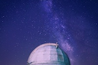

I like photography and the outdoors. It has been five years since I bought my first camera in Spring 2017. Time flies! Astrography is one of my favourite areas of photography. I enjoy outdoors and capturing the beautiful shooting stars, comets, and galaxies. The fantastic thing about astrography is that it leaves abundant space for creativity. With long exposure and photo editing, astrographers can create fantasy scenes which looks much better than what we can observe with our eyes.
Astrography requires good preparation and luck. For many times, I was all well prepared, but when I went out, I realized that day was cloudy, which was very frustrating. My favorite astrography photos were taken in an observatory near my old university. Although there was lots of light pollution, I really like the composition of white dome and summer galaxies. My favorite prop is green laser lights, which creates a sci-fi vibe in contrast with night skies.
